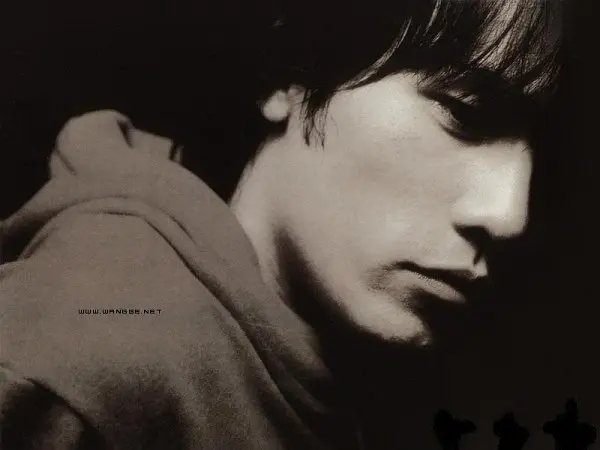

专辑名称:《夜曲》
专辑名称：《暗号》
周杰伦的生日是1979年01月18日，出生于中国台湾。 他身高173cm。 他体重60kg。 他也被叫做Jay|周董。
毕业于淡江中学音乐班的周杰伦从小就安静害羞，但对音乐有着过人的敏感。由于学妹帮他报名了“超级新人王”偶像征选节目，作为钢琴伴奏的周杰伦被主持吴宗宪慧眼识中，签下专职写歌，从而进了音乐圈。一年半后，从幕后走向幕前，2000年推出第一张个人专辑《Jay周杰伦》，横扫各大颁奖礼，荣升“台湾本土R&B小天王”，随后《范特西》、《八度空间》、《叶惠美》、《十一月的肖邦》、《依然范特西》等专辑持续掀起杰伦热潮。在歌坛创出奇迹的周杰伦于2005年杀入电影圈，在影片《头文字D》中饰演主角拓海，其自然的表演不但让众多的歌迷为其疯狂，还为其赢得了金马最佳新人奖项。首次触电所带来的成绩让周杰伦迷上了演戏。2006年，在张艺谋导演的《满城尽带黄金甲》中，周杰伦与周润发，巩俐等巨星合作，饰演二皇子一角，并亲自为影片创作了主题曲《菊花台》。
夜曲 暗号